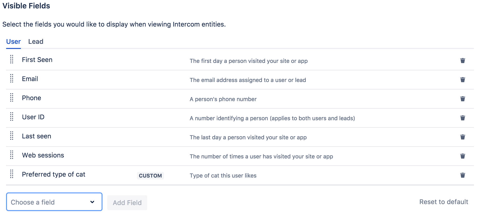

Conversation Panel Configuration
Once you have an authorized Intercom Connection you have a bunch of configuration options available to tailor-fit the add-on's behaviour and features to your needs.
[info] Prerequisites
Enable/Disable Conversation Panel
By enabling/disabling the toggle button Enable Conversation Panel you can enable/disable the whole feature.
This is useful if you don't want the add-on to render the Conversation panel on your Jira issue page.
Configure Visible Fields
This setting allows you to configure visible fields for different Intercom entities, e.g. when rendering users in the Conversation Panel. In addition to Intercom standard attributes you can also configure custom attributes.
[warning] Warning
This feature is designed for configurability of the user interface. It is not designed to securely remove information visible to Jira users. If a field is not visible, it does not mean that the data is not available to Jira users.

Add Field to Visible Fields
- Select the entity (User, Lead) that you would like to configure.
- Click the select box reading Choose a field below the list of visible fields.
- Type to search or scroll to browse until you have found the field.
- Click Add Field.
- Your field will be added to the list of visible fields and the configuration change will be saved automatically.
Reorder Visible Fields
- Select the entity (User, Lead) that you would like to configure.
- Hover over the field you would like to reorder.
- Click and drag it to the desired position.
- The configuration change will be saved automatically.
Remove Field from Visible Fields
- Select the entity (User, Lead) that you would like to configure.
- Browse the list of visible fields until you have found the field you would like to remove.
- Click the trash bin button at the right side of the field entry.
- Your field will be removed from the list of visible fields and the configuration change will be saved automatically.